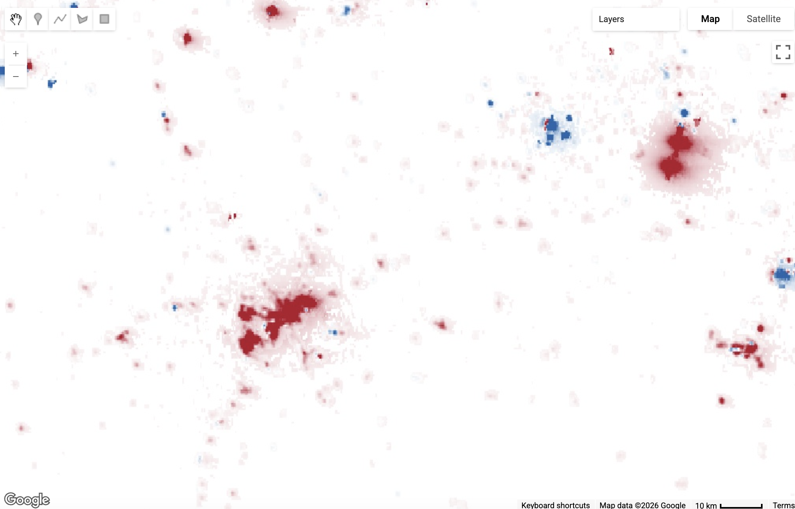
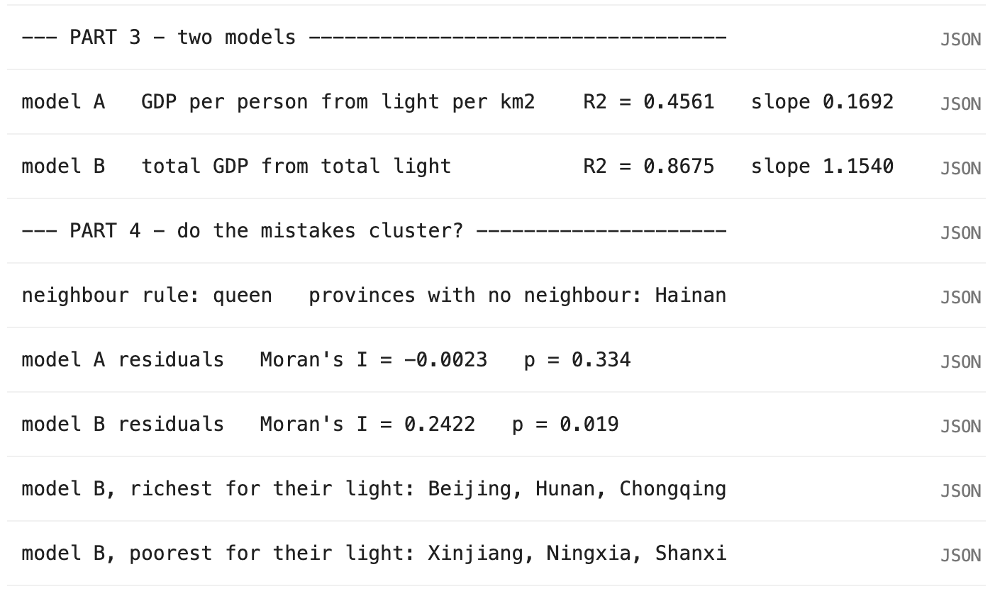

Lab 06 · November 2026
Predicting from Pixels
The question
How well can nighttime-light satellite data predict economic activity across China's provinces, and do the prediction errors cluster spatially?
The data
The analysis uses 31 Chinese provinces, autonomous regions, and municipalities with preliminary 2024 GDP data and 2024 nighttime-light measurements from VIIRS annual composites. Under the queen-contiguity neighbour rule, Hainan was kept in the analysis even though it had no neighbouring province.
The method
I first compared nighttime-light raster data from 2014 and 2024 and used Earth Engine to reduce raster cells inside selected regions to mean radiance values.
I then compared two log-scale regression models. Model A predicted GDP per person from light per square kilometre, while Model B predicted total GDP from total light. I tested the residuals using Moran's I and 999 permutations under two neighbour rules: queen contiguity and four nearest neighbours.
The map
The first figure shows the change in nighttime light between 2014 and 2024 at a close enough scale to see individual raster cells. The second figure shows the regression and spatial-residual results in the Earth Engine Console.
Figure 1 · Nighttime-light change in Kazakhstan

Figure 2 · Regression and residual test

Earth Engine script
Open the Google Earth Engine script
What I found
| Question | Answer |
|---|---|
| Q1 | The Yangtze delta 2024/2014 nighttime-light ratio was 1.5996, and the Changtang plateau mean radiance in 2024 was 0.00194. Model A had R² = 0.4561, while Model B had R² = 0.8675. Before checking the spatial pattern of the residuals, I would report Model B because it explains substantially more of the variation in GDP than Model A. |
| Q2 | Model A had Moran's I = −0.0023, with p = 0.382 in the first run and p = 0.334 in the second run. Model B had Moran's I = 0.2422, with p = 0.016 in the first run and p = 0.019 in the second run. Moran's I stayed the same because the residuals and neighbour structure did not change, while the p-values changed slightly because the permutation test randomly reshuffles the residuals 999 times on each run. |
| Q3 |
Using the four-nearest-neighbours rule, Model A had
Moran's I = 0.0141 with
p = 0.288, while Model B had
Moran's I = 0.2753 with
p = 0.005. My conclusion did not change:
Model A's residuals still showed no meaningful spatial clustering,
while Model B's residuals remained significantly clustered.
The clustering for Model B became slightly stronger under the
knn4 rule.
|
Although Model B had a much higher R², its residuals were spatially clustered. This suggests that the model is missing some geographically organised factor that nighttime light alone does not capture.
What this does not show
Nighttime light is not a direct measurement of economic activity. A place can become brighter because of roads, industrial facilities, lighting technology, or other changes that are not equivalent to growth in GDP. Likewise, economically productive activities can occur in places that remain relatively dark.
The residual test also depends on how a neighbour is defined. Under queen contiguity, Hainan had no neighbour; under the four-nearest-neighbours rule, every province had neighbours. Changing this spatial rule changed the strength of the measured clustering, showing that the neighbour definition is an analytical choice rather than something contained in the satellite data.
AI disclosure
I used ChatGPT to clarify the Google Earth Engine steps, interpret the Moran's I and permutation-test results, and review my HTML code. I checked the numerical results against the Earth Engine Console and the Lab 6 instructions.
← Back to all labs